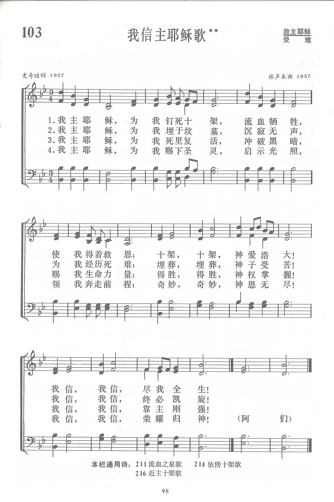

|
|
|
|
|
103 我信主耶稣歌 |
|
https://www.zanmeishige.com/tab/13763.html?songbook=1&index=103
 |
|
|
|
|

https://youtu.be/70MvrOOPJDc
第1O3首 我信主耶稣歌** _史奇珪 Jesus my Lord was crucified for me
经文：“我当日所领受又传给你们的，第一，就是基督照圣经所说，为我们的罪死了，而且埋葬了，又照圣经所说，第三天复活了”(林前15：3-4)。
《我信主耶稣歌》是史奇珪和林声本两位牧师合作的成果。他们二人是上海教会内勤于圣诗创作的同工.(他们的简历分别见第9首和第47首。)
这首诗产生的经过要追溯到1957年。当时的上海基督教青年工作者团契出版《恩言》刊物，上述两位都协助编辑工作。该刊1957年第2期定于复活节出版，请林声本执笔写一篇关于复活节的短讲。他写完了《主已复活了》一文后，好像还想写点什么，便在钢琴上弹出这首深沉的曲调，并把它记录下来。几天后，《恩言》编辑部同工见面时，他将这首曲调拿给史奇珪看，征求意见，史奇珪一哼唱便觉得是一首很好的赞美诗曲。林声本说：“可惜它还没有歌词。”史奇珪答道：“让我去多唱几遍，也许会有所感动写歌词的。”又过了几天，史牧师果然为它配上了歌词，题目就叫《我信》。这首诗便登在那期《恩言》的封底上，与前面的短讲相呼应。
这是一首发自内心的宣告虔信耶稣受难、埋葬、复活，并领受圣灵的诗歌。曲调分为两部分：
前两乐句基于小调，开宗就用此处图片省略 ，这是小调主和弦的分解式，是下行的，低沉的，形象地刻划耶稣如何为我们受死，被钉在十字架上的凄惨景象。
第三、四乐句转为大调，音乐逐渐走向高亢，从忧伤的情绪转到明朗与喜悦。“十架，十架，神爱浩大”，显示神恩的宽广；“我信，我信，尽我全生”，特别表现出信仰上的坚定。
1981年，《新编》编辑工作开始后，林声本与史奇珪都想起这首旧作，便翻出来征求同工的意见，大家都觉得很好。原诗只有三节，同工们建议加上求主赐下圣灵，光照奔走前程的内容。这便是现在的第四节。题目改成《我信主耶稣歌》。
曲调方面，考虑到此处图片省略 不易唱，在首句再现时(即第二乐句)改了一个音，把3改为5，变成此处图片省略 。但首句未作改动，主要是为了保持原来的深意。
这首诗虽是先有曲调，后配上词句，但因词曲作者同被一个灵所感，词是按曲调的进行而写的，唱的人都觉得词曲协合，富有感力。出版前，有一次在南京进行试唱，一位姊妹听后感动得泪流满面。这种情况在赞美诗试唱的过程中，是不多见的。